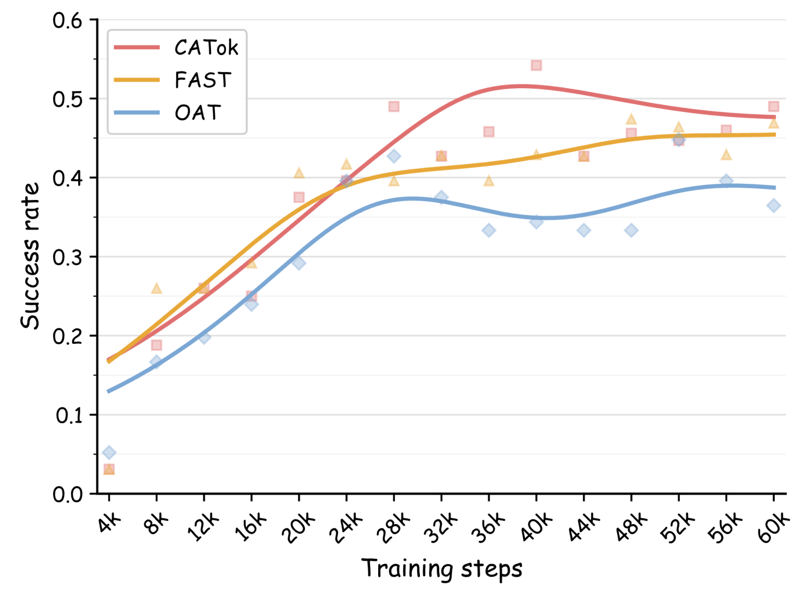

CATok
Main Results
Better success rate, faster inference, fewer steps
95.9%
Avg. success on LIBERO
1.7×
Faster VLA inference than FAST
3.6×
VRR×CR of FAST at equal tokens
~50%
Steps to match the best baseline
We evaluate CATok on three simulation benchmarks—LIBERO, SimplerEnv (Simpler-Bridge), and RoboTwin 2.0—against three representative tokenizer baselines: BIN (uniform per-dimension discretization), FAST (DCT-based compression with BPE tokenization), and OAT (learned fixed-length tokenizer with prefix-based decoding).
| Method | LIBERO | Simpler-Bridge | RoboTwin 2.0 | |||||||||
|---|---|---|---|---|---|---|---|---|---|---|---|---|
| Spatial | Object | Goal | Long | Avg. | Spoon | Carrot | Stack | Eggplant | Avg. | Clean | Rand. | |
| BIN | 0.586 | 0.878 | 0.680 | 0.604 | 0.687 | 0.542 | 0.333 | 0.208 | 0.708 | 0.448 | 0.213 | 0.221 |
| FAST | 0.960 | 0.998 | 0.962 | 0.901 | 0.955 | 0.500 | 0.375 | 0.375 | 0.625 | 0.469 | 0.478 | 0.478 |
| OAT | 0.428 | 0.876 | 0.704 | 0.276 | 0.571 | 0.417 | 0.208 | 0.167 | 0.667 | 0.365 | 0.229 | 0.233 |
| CATok (Ours) | 0.978 | 0.994 | 0.954 | 0.910 | 0.959 | 0.458 | 0.417 | 0.542 | 0.542 | 0.490 | 0.489 | 0.531 |
Table 1 · Simulation benchmarking results. Accent bold marks the best result per column.
